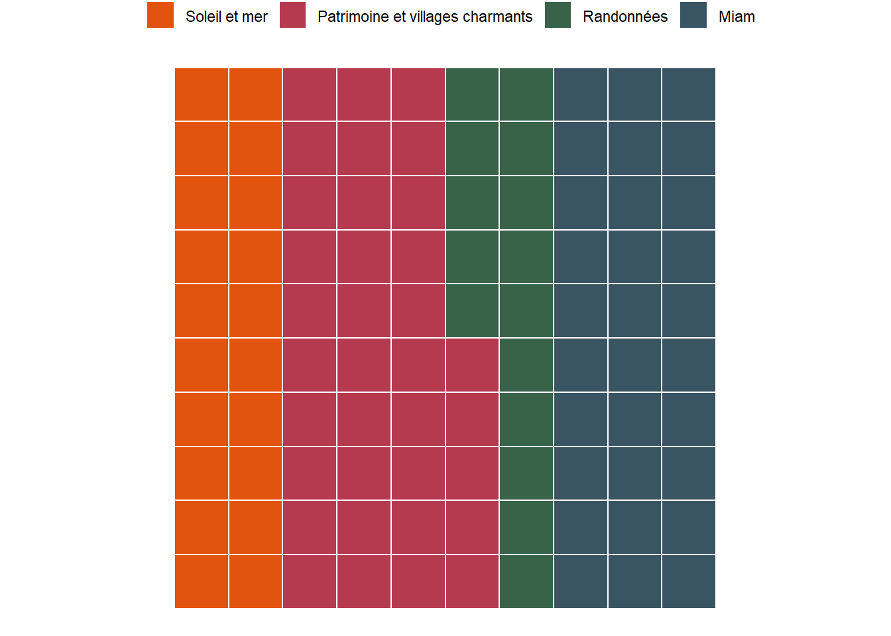

Voyage voyage
Et si on partait en Sicile, mais sans avion ou voiture ? Reste le vélo (trop long), le dirigeable (trop vintage) ou le train : parfait !
Jeux de sociétés, tisane ou vin en terrasse, discussions sans vraiment de fin, de début ou même de suite logique, envie de voyager autrement, la team Verveine se prépare pour sa prochaine destination.

Trois verveines voyageuses
Juliette
Compétence spéciale : Polyglotte
Juliette maîtrise l’italien à la perfection, ce qui la rend ultra à l’aise pour naviguer dans les petites ruelles siciliennes. En plus, elle aime tricoter, une activité qui lui permet d’occuper les longues haltes entre deux trains
Point faible : Sac à dos trop lourd
Toujours prête à tout emporter « au cas où », son sac est un vrai casse-tête logistique. En plus, les randonnées, ce n’est pas vraiment son truc… mais elle les fait quand même pour le groupe.
Marie
Compétence spéciale : Ambiance solaire
Toujours pleine d’énergie et de bonne humeur, Marie est un véritable rayon de soleil pour le groupe. Son amour des chats lui permet aussi de se faire des amis à chaque coin de rue, surtout lorsqu’il y a des félins à câliner.
Point faible : Stratège aléatoire et sens de l’orientation incertain
Dans les jeux, Marie adopte une stratégie totalement imprévisible, ce qui peut rendre les parties intéressantes, mais parfois chaotiques. Et niveau orientation, il n’est pas rare de la voir se perdre, même avec un GPS sous la main !
Noemie
Compétence spéciale : Planificatrice avertie
Noémie adore organiser le voyage et a un vrai talent pour anticiper les étapes. Elle aime aussi les randonnées et est toujours partante pour explorer de nouveaux sentiers.
Point faible : Ambitieuse dans les activités sportives
Parfois, Noémie a tendance à voir un peu trop grand pour les activités sportives, en proposant des randonnées ou des défis plus longs ou difficiles que ce que le groupe pourrait gérer. Survit très mal dans le sable, la plage n’est pas son élément naturel

Le voyage en train
Pourquoi choisir la Sicile
Là-bas, le temps s’arrête. Il y a des petits villages perchés comme Erice, où on a l’impression d’être ailleurs, et des marchés pleins de vie à Palerme où on peut flâner, goûter plein de trucs et se laisser porter. Et le soir, on se pose face à la mer avec un coucher de soleil de malade. Juste nous, un verre à la main, et la tranquillité. Prêtes à faire vos sacs ?
Attention aux péripéties
Quel intérêt si Frodon avait pu atteindre la tour de Sauron dès le premier film, à dos d’aigle ? Une belle aventure nécessite un peu de péripéties !
Créé par Noémie M. et ChatGPT.
Attention à tout moment il faudra refaire, troquer soleil et arancini pour les montagnes et le gruyère suisse !!